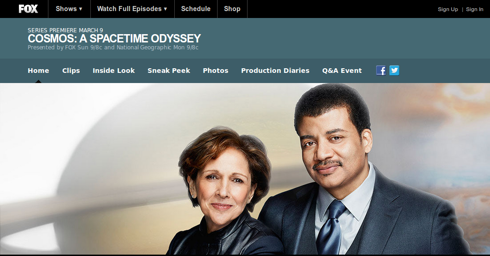

הסוד ליצירת תוכנית מדע טובה
(בעיני)
עירא אברמוב
אייקון 2014
skeptic@ira.abramov.org
הציפיות שלי
(מצטער, לא באמת סודות...)
נא לחשוף את הצופים לשיטה המדעית ולא רק לעובדות.
במילים אחרות: דרך ההסקה חשובה יותר מהמסקנות.
כבד את צופיך למען יאריכון ימיך בשידורים חוזרים.
טלוויזיה היא מדיום חזותי, נא לנצל אותו להמחשות. לא ראשים מדברים ולא אגו של המנחה.
יש אינטרנט, השתמשו בו! מידע מורחב ותוכן אינטראקטיבי בבקשה!
הבדילו בין תורות מוכחות, להשערות שעדיין נחקרות או תחת חלוקי דעות, ובין פנטאזיות.
חברו עובדות למשמעות חברתית כשזה נדרש.
אפשר וראוי לחבר את הקהל רגשית למדען המגלה, כדי לעורר בהם
את החיבור לפליאה וההתרגשות בתהליך, אבל לא להפוך את סיפור חייו
למוקד.
בינתיים בביביסי - יעקב ברונובסקי
האקטיביסט הגלובאלי - קרל סאגן
קוסמוס טייק 2 - גרסת פוקס
קוסמוס טייק 2 - תכנים נוספים ביוטיוב
קוסמוס טייק 2 - ומה בוובסייט?

כדאי להכיר - קונקשנס, ג'יימס בורק
ולמעדיפים בעיקר תמונות יפות
בריאן קוקס מגניב. אוקי, הבנו...
מריאליטי לחשיבה חדה - מפצחי המיתוסים
נסיונות חיקוי שלא צלחו - היקום הנורא
פינת הנוסטלגיה לילד - ביל נאי